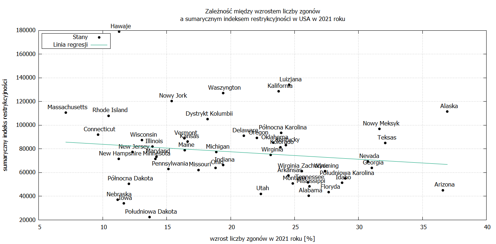

Zgony i restrykcje
Data: 12 listopada 2022
Artykuł przedstawia wyniki badań nad zależnością między wzrostem liczby zgonów i rozmiarem restrykcji w poszczególnych krajach na świecie i w poszczególnych stanach USA w latach 2020 i 2021.
Jeśli wprowadzane restrykcje w czasie rzekomej pandemii miały mieć sens, to powinna istnieć zależność odwrotna pomiędzy wzrostem liczby zgonów a rozmiarem restrykcji: im silniejsze restrykcje, tym mniejszy wzrost liczby zgonów na danym obszarze. Zobaczmy, czy tak rzeczywiście było. Wzrost liczby zgonów na świecie został obliczony na podstawie danych projektu World Mortality Dataset, a rozmiar restrykcji został obliczony na podstawie danych projektu Oxford Covid-19 Government Response Tracker. Dla USA dane o zgonach pochodzą z Centers for Disease Control and Prevention.
Źródła danych: 1) dane o zgonach w poszczególnych krajach na świecie: projekt World Mortality Dataset 2) dane o zgonach w poszczególnych stanach w USA: Centers for Disease Control and Prevention (linki do danych: zgony w latach 2014-2019, zgony w latach 2020-2022) 3) dane o poziomie restrykcji na świecie i w USA: Oxford Covid-19 Government Response Tracker (dla poszczególnych krajów dane z katalogu https://github.com/OxCGRT/covid-policy-tracker-legacy/tree/main/legacy_data_202207, dla USA dane z katalogu https://github.com/OxCGRT/USA-covid-policy/tree/master/data)
Do oceny zależności pomiędzy wzrostem liczby zgonów a rozmiarem restrykcji użyto współczynnika korelacji Pearsona. Do oceny wzrostu liczby zgonów w danym roku (np.2020) obliczono wzrost liczby zgonów w stosunku do średniej liczby zgonów z lat 2018 i 2019. Do oceny rozmiaru restrykcji użyto sumarycznego indeksu restrykcyjności. Patrz punkt "Sumaryczny indeks restrykcyjności" poniżej, jak został obliczony ten indeks.
Poniżej zamieszczonych jest 8 wykresów ilustrujących wyniki obliczeń:
Zależność pomiędzy wzrostem liczby zgonów a sumarycznym indeksem restrykcyjności na świecie w 2020 roku. Wersja z nazwami krajów. Współczynnik korelacji Pearsona 0,5047. Umiarkowana korelacja dodatnia. Im ostrzejsze restrykcje, tym większy wzrost liczby zgonów. Patrz tabela.
Zależność pomiędzy wzrostem liczby zgonów a sumarycznym indeksem restrykcyjności na świecie w 2020 roku. Wersja bez nazw krajów. Współczynnik korelacji Pearsona 0,5047. Umiarkowana korelacja dodatnia. Im ostrzejsze restrykcje, tym większy wzrost liczby zgonów. Patrz tabela.
Zależność pomiędzy wzrostem liczby zgonów a sumarycznym indeksem restrykcyjności na świecie w 2021 roku. Wersja z nazwami krajów. Współczynnik korelacji Pearsona 0,2376. Brak korelacji. Patrz tabela.
Zależność pomiędzy wzrostem liczby zgonów a sumarycznym indeksem restrykcyjności na świecie w 2021 roku. Wersja bez nazw krajów. Współczynnik korelacji Pearsona 0,2376. Brak korelacji. Patrz tabela.
Zależność pomiędzy wzrostem liczby zgonów a sumarycznym indeksem restrykcyjności w poszczególnych stanach w USA w 2020 roku. Wersja z nazwami stanów. Współczynnik korelacji Pearsona -0,2568. Brak korelacji. Patrz tabela.
Zależność pomiędzy wzrostem liczby zgonów a sumarycznym indeksem restrykcyjności w poszczególnych stanach w USA w 2020 roku. Wersja bez nazw stanów. Współczynnik korelacji Pearsona -0,2568. Brak korelacji. Patrz tabela.

Zależność pomiędzy wzrostem liczby zgonów a sumarycznym indeksem restrykcyjności w poszczególnych stanach w USA w 2021 roku. Wersja z nazwami stanów. Współczynnik korelacji Pearsona -0,1572. Brak korelacji. Patrz tabela.
Zależność pomiędzy wzrostem liczby zgonów a sumarycznym indeksem restrykcyjności w poszczególnych stanach w USA w 2021 roku. Wersja bez nazw stanów. Współczynnik korelacji Pearsona -0,1572. Brak korelacji. Patrz tabela.
Wniosek: W żadnym przypadku nie widać, aby wprowadzane restrykcje miały jakiś wpływ na zmniejszenie wzrostu liczby zgonów. W jednym przypadku mieliśmy do czynienia z czymś przeciwnym: w 2020 roku większy poziom restrykcji był związany z większym wzrostem zgonów, ale dotyczy to tylko danych dla poszczególnych krajów na świecie. W poszczególnych stanach w USA takiej korelacji w ogóle nie było w latach 2020 i 2021.
Sumaryczny indeks restrykcyjności
Opis indeksów znajduje się w opracowaniu "Variation in government responses to COVID-19".
Poniżej indeksy wykorzystywane w tym artykule:
C1 - zamykanie szkół C2 - zamykanie miejsc pracy C3 - odwołanie imprez publicznych C4 - ograniczenia rozmiarów zgromadzeń C5 - zamykanie transportu publicznego C6 - obowiązek pozostania w domu C7 - ograniczenia w podróżach wewnętrznych C8 - kontrola podróży międzynarodowych H1 - publiczna kampania informacji H6 - noszenie masek
W opracowaniu "Variation in government responses to COVID-19" został zdefiniowany poniższy indeks: Stringency index = (C1 + C2 + C3 + C4 + C5 + C6 + C7 + C8 + H1) / 9 Jest to średnia z dziewięciu indeksów.
Na potrzeby tego artykułu użyto sumy dziewięciu indeksów (nie średniej), jak niżej:
Sumaryczny indeks restrykcyjności = C1 + C2 + C3 + C4 + C5 + C6 + C7 + C8 + H6
Zamiast indeksu H1 użyto indeksu H6. Dla całego danego roku (np. 2020) najpierw obliczano sumaryczny indeks restrykcyjności dla każdego dnia, a potem sumę dla wszystkich dni w danym roku.
Więcej szczegółów technicznych dotyczących wszystkich obliczeń wykorzystanych w tym artykule znajduje się w pliku README003.md oraz w katalogu https://github.com/wolniludzieslask/plandemia/tree/main/oprogramowanie/fun003.
Dane o zgonach dla Peru
Dane użyte w tym artykule zostały pobrane 3 października 2022, a więc są to inne dane niż dane wykorzystane poprzednio tutaj. Najbardziej widoczna różnica wystąpiła w danych o zgonach dla Peru. W poprzednich danych wzrost liczby zgonów w tym kraju (w stosunku do średniej w latach 2018 i 2019) wyniósł w roku 2020 98,41%, a w roku 2021 118,26%. W danych z 3 października wzrost wyniósł w 2020 roku 55.3%, a w roku 2021 70.83%. Przyczyną takiej różnicy jest to, że od 1 lipca 2022 dane dla Peru są korygowane. Patrz objaśnienia tutaj. W skrócie to jest tak, że dane dla Peru pochodzą z bazy ministerstwa zdrowia Peru SINADEF. Dane są podawane dla każdego dnia. Żeby otrzymać dane tygodniowe, autorzy projektu World Mortality Dataset sumują dane dzienne. Istnieje również druga baza danych biura statystycznego Peru INEI, która dostarcza danych rocznych. Wysumowane liczby dziennych zgonów dla całego roku z bazy SINADEF są mniejsze niż roczne liczby zgonów z bazy INEI. Powodem jest niekompletność danych w bazie SINADEF. Stosunek liczby zgonów w bazie SINADEF do liczby zgonów w bazie INEI jest miarą niekompletności danych w bazie SINADEF. Z tego powodu dane z bazy SINADEF, a więc te, które są na stronie projektu World Mortality Dataset, są korygowane z uwzględnieniem tych współczynników niekompletności. Te współczynniki to 2017: 66%; 2018: 74%; 2019: 73%; 2020 (i dalsze lata): 94%.
Nie ma jeszcze raportu INEI za 2021 rok, więc te dane mogą być jeszcze skorygowane, jeśli chodzi o liczbę zgonów w 2021 roku.